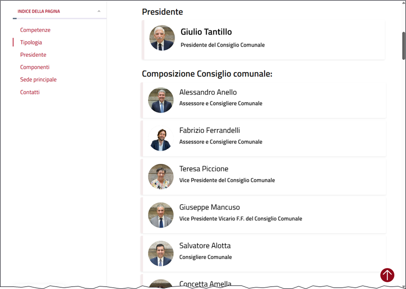

🚧 Pagina in costruzione
Questa pagina è ancora in lavorazione. Il contenuto è incompleto e non revisionato.
Gli schemi¶
Molti LLM consentono di produrre output strutturati, in formato JSON e altri formati. La funzione schema di llm consente di definire uno schema per l'output che si desidera ottenere.
Creare dati a partire da uno schema¶
Molto spesso è utile creare dei dati di esempio a partire da uno schema. Con llm basta lanciare un comando come il seguente, con l'opzione --schema:
In output si avrà un JSON come questo:
{
"citta": "Roma",
"indirizzo": "Via del Corso, 123",
"nome": "Bella Italia",
"posti_a_sedere": 50
}
È molto più utile creare un set di dati, creare più ristoranti. L'opzione è --schema-multi:
In output si avrà un JSON come questo:
{
"items": [
{
"citta": "Roma",
"indirizzo": "Via del Corso 123",
"nome": "La Pergola",
"posti_a_sedere": 80
},
{
"citta": "Firenze",
"indirizzo": "Piazza della Signoria 45",
"nome": "Trattoria Mario",
"posti_a_sedere": 60
},
{
"citta": "Venezia",
"indirizzo": "Calle del Traghetto 78",
"nome": "Osteria Alle Testiere",
"posti_a_sedere": 40
},
{
"citta": "Milano",
"indirizzo": "Via Montenapoleone 90",
"nome": "Il Salumaio di Montenapoleone",
"posti_a_sedere": 100
},
{
"citta": "Napoli",
"indirizzo": "Via Tribunali 22",
"nome": "L'Antica Pizzeria da Michele",
"posti_a_sedere": 50
}
]
}
Estrarre dati a partire da uno schema¶
Oltre a generare dati inventati, è possibile estrarre dati a partire da un testo (una pagina web, un documento, un log di un programma), utilizzando uno schema.
Un esempio potrebbe essere quello di estrarre, nome, ruolo, sesso, URL della pagina web, delle persone che compongono un consiglio comunale. Come esempio quello del comune di Palermo (notare che il sesso sarà estratto in modo automatico, e non è presente nella pagina web).

Basta passare il codice HTML della pagina web a llm con l'opzione --schema-multi, specificando lo schema che si desidera ottenere:
curl -kL "https://www.comune.palermo.it/amministrazione/unita_organizzativa/consiglio-comunale-3/" | \
llm --schema-multi "
nome: il nome del consigliere
ruolo: il ruolo
url: url della pagina del consigliere
sesso: m per maschio f per femmina NA per dubbio o inapplicabile
" --system 'estrai i dati dei consiglieri comunali presenti nella pagina web'
In output si avrà un JSON come questo:
{
"items": [
{
"nome": "Giulio Tantillo",
"ruolo": "Presidente del Consiglio Comunale",
"sesso": "m",
"url": "https://www.comune.palermo.it/persona_pubblica/giulio-tantillo-2/"
},
{
"nome": "Alessandro Anello",
"ruolo": "Assessore e Consigliere Comunale",
"sesso": "m",
"url": "https://www.comune.palermo.it/persona_pubblica/alessandro-anello/"
},
{
"nome": "Fabrizio Ferrandelli",
"ruolo": "Assessore e Consigliere Comunale",
"sesso": "m",
"url": "https://www.comune.palermo.it/persona_pubblica/fabrizio-ferrandelli/"
},
{
"nome": "Teresa Piccione",
"ruolo": "Vice Presidente del Consiglio Comunale",
"sesso": "f",
"url": "https://www.comune.palermo.it/persona_pubblica/teresa-piccione/"
},
...
Estrarra dati dal DB di LLM cli¶
L'output di un'estrazione dati tramite schema, oltre a essere visualizzato nel terminale, viene salvato nel db SQLite di log di llm.
Per estrarre i dati dal log, dell'ultima conversazione basta lanciare il comando:
L'opzione -c serve a estrarre dalla conversazione più recente, e l'opzione --data serve a estrarre i dati in formato JSON. Qui sotto un esempio di output.
Esempio di output
{"items": [{"nome": "Giulio Tantillo", "ruolo": "Presidente del Consiglio Comunale", "sesso": "m", "url": "https://www.comune.palermo.it/persona_pubblica/giulio-tantillo-2/"}, {"nome": "Alessandro Anello", "ruolo": "Assessore e Consigliere Comunale", "sesso": "m", "url": "https://www.comune.palermo.it/persona_pubblica/alessandro-anello/"}, {"nome": "Fabrizio Ferrandelli", "ruolo": "Assessore e Consigliere Comunale", "sesso": "m", "url": "https://www.comune.palermo.it/persona_pubblica/fabrizio-ferrandelli/"}, {"nome": "Teresa Piccione", "ruolo": "Vice Presidente del Consiglio Comunale", "sesso": "f", "url": "https://www.comune.palermo.it/persona_pubblica/teresa-piccione/"}, {"nome": "Giuseppe Mancuso", "ruolo": "Vice Presidente Vicario F.F. del Consiglio Comunale", "sesso": "m", "url": "https://www.comune.palermo.it/persona_pubblica/giuseppe-mancuso/"}, {"nome": "Salvatore Alotta", "ruolo": "Consigliere Comunale", "sesso": "m", "url": "https://www.comune.palermo.it/persona_pubblica/salvatore-alotta-2/"}, {"nome": "Concetta Amella", "ruolo": "Consigliere Comunale", "sesso": "f", "url": "https://www.comune.palermo.it/persona_pubblica/concetta-amella/"}, {"nome": "Rosario Arcoleo", "ruolo": "Consigliere Comunale", "sesso": "m", "url": "https://www.comune.palermo.it/persona_pubblica/rosario-arcoleo/"}, {"nome": "Giulia Argiroffi", "ruolo": "Consigliere Comunale", "sesso": "f", "url": "https://www.comune.palermo.it/persona_pubblica/giulia-argiroffi/"}, {"nome": "Domenico Bonanno", "ruolo": "Consigliere Comunale", "sesso": "m", "url": "https://www.comune.palermo.it/persona_pubblica/domenico-bonanno/"}, {"nome": "Leonardo Canto", "ruolo": "Consigliere Comunale", "sesso": "m", "url": "https://www.comune.palermo.it/persona_pubblica/leonardo-canto/"}, {"nome": "Germana Canzoneri", "ruolo": "Consigliere Comunale", "sesso": "f", "url": "https://www.comune.palermo.it/persona_pubblica/germana-canzoneri/"}, {"nome": "Dario Chinnici", "ruolo": "Consigliere Comunale", "sesso": "m", "url": "https://www.comune.palermo.it/persona_pubblica/dario-chinnici/"}, {"nome": "Valentina Chinnici", "ruolo": "Consigliere Comunale dimissionaria in data 13/02/2023", "sesso": "f", "url": "https://www.comune.palermo.it/persona_pubblica/valentina-chinnici/"}, {"nome": "Tiziana D'Alessandro", "ruolo": "Consigliere Comunale", "sesso": "f", "url": "https://www.comune.palermo.it/persona_pubblica/tiziana-dalessandro/"}, {"nome": "Mariangela Di Gangi", "ruolo": "Consigliere Comunale", "sesso": "f", "url": "https://www.comune.palermo.it/persona_pubblica/mariangela-di-gangi/"}, {"nome": "Salvatore Di Maggio", "ruolo": "Consigliere Comunale surroga del consigliere Caronia Anna Maria", "sesso": "m", "url": "https://www.comune.palermo.it/persona_pubblica/salvatore-di-maggio/"}, {"nome": "Sabrina Figuccia", "ruolo": "Consigliere Comunale", "sesso": "f", "url": "https://www.comune.palermo.it/persona_pubblica/sabrina-figuccia/"}, {"nome": "Salvatore Forello", "ruolo": "Consigliere Comunale", "sesso": "m", "url": "https://www.comune.palermo.it/persona_pubblica/salvatore-forello/"}, {"nome": "Massimiliano Giaconia", "ruolo": "Consigliere Comunale", "sesso": "m", "url": "https://www.comune.palermo.it/persona_pubblica/massimiliano-giaconia/"}, {"nome": "Fabio Giambrone", "ruolo": "Consigliere Comunale", "sesso": "m", "url": "https://www.comune.palermo.it/persona_pubblica/fabio-giambrone/"}, {"nome": "Salvatore Imperiale", "ruolo": "Consigliere Comunale", "sesso": "m", "url": "https://www.comune.palermo.it/persona_pubblica/salvatore-imperiale/"}, {"nome": "Giovanni Inzerillo", "ruolo": "Consigliere Comunale", "sesso": "m", "url": "https://www.comune.palermo.it/persona_pubblica/giovanni-inzerillo/"}, {"nome": "Teresa Leto", "ruolo": "Consigliere Comunale surroga del consigliere Fabrizio Ferrara", "sesso": "f", "url": "https://www.comune.palermo.it/persona_pubblica/teresa-leto/"}, {"nome": "Giuseppe Lupo", "ruolo": "Consigliere Comunale dimissionario in data 08/08/2024", "sesso": "m", "url": "https://www.comune.palermo.it/persona_pubblica/giuseppe-lupo/"}, {"nome": "Alberto Mangano", "ruolo": "Consigliere Comunale surroga del consigliere Valentina Chinnici", "sesso": "m", "url": "https://www.comune.palermo.it/persona_pubblica/alberto-mangano/"}, {"nome": "Caterina Meli", "ruolo": "Consigliere Comunale", "sesso": "f", "url": "https://www.comune.palermo.it/persona_pubblica/caterina-meli/"}, {"nome": "Carmelo Miceli", "ruolo": "Consigliere Comunale", "sesso": "m", "url": "https://www.comune.palermo.it/persona_pubblica/carmelo-miceli/"}, {"nome": "Francesco Miceli", "ruolo": "Consigliere di diritto", "sesso": "m", "url": "https://www.comune.palermo.it/persona_pubblica/francesco-miceli/"}, {"nome": "Giuseppe Miceli", "ruolo": "Consigliere Comunale", "sesso": "m", "url": "https://www.comune.palermo.it/persona_pubblica/giuseppe-miceli/"}, {"nome": "Giuseppe Milazzo", "ruolo": "Consigliere Comunale", "sesso": "m", "url": "https://www.comune.palermo.it/persona_pubblica/giuseppe-milazzo/"}, {"nome": "Leopoldo Piampiano", "ruolo": "Consigliere Comunale", "sesso": "m", "url": "https://www.comune.palermo.it/persona_pubblica/leopoldo-piampiano/"}, {"nome": "Natale Puma", "ruolo": "Consigliere Comunale", "sesso": "m", "url": "https://www.comune.palermo.it/persona_pubblica/natale-puma/"}, {"nome": "Viviana Raja", "ruolo": "Consiglieri Comunali", "sesso": "f", "url": "https://www.comune.palermo.it/persona_pubblica/viviana-raja/"}, {"nome": "Antonino Randazzo", "ruolo": "Consigliere Comunale", "sesso": "m", "url": "https://www.comune.palermo.it/persona_pubblica/antonino-randazzo/"}, {"nome": "Giovanna Rappa", "ruolo": "Consigliere Comunale", "sesso": "f", "url": "https://www.comune.palermo.it/persona_pubblica/giovanna-rappa/"}, {"nome": "Antonio Rini", "ruolo": "Consigliere Comunale", "sesso": "m", "url": "https://www.comune.palermo.it/persona_pubblica/antonio-rini-3/"}, {"nome": "Francesco Paolo Scarpinato", "ruolo": "Consigliere Comunale", "sesso": "m", "url": "https://www.comune.palermo.it/persona_pubblica/francesco-paolo-scarpinato/"}, {"nome": "Fabio Teresi", "ruolo": "Consigliere Comunale surroga del consigliere Giuseppe Lupo", "sesso": "m", "url": "https://www.comune.palermo.it/persona_pubblica/fabio-teresi-3/"}, {"nome": "Pasquale Terrani", "ruolo": "Consigliere Comunale", "sesso": "m", "url": "https://www.comune.palermo.it/persona_pubblica/pasquale-terrani/"}, {"nome": "Ottavio Zacco", "ruolo": "Consigliere comunale", "sesso": "m", "url": "https://www.comune.palermo.it/persona_pubblica/ottavio-zacco/"}, {"nome": "Maria Anna Caronia", "ruolo": "Consigliere Comunale dimissionaria in data 29/03/2023", "sesso": "f", "url": "https://www.comune.palermo.it/persona_pubblica/maria-anna-caronia/"}, {"nome": "Fabrizio Ferrara", "ruolo": "Consigliere Comunale dimissionario in data 15/12/2022", "sesso": "m", "url": "https://www.comune.palermo.it/persona_pubblica/fabrizio-ferrara/"}, {"nome": "Antonino Abbate", "ruolo": "Consigliere dal 02/08/2022", "sesso": "m", "url": "https://www.comune.palermo.it/persona_pubblica/antonino-abbate/"}]}
Se invece si vuole l'output in formato jsonlines - più comodo per essere elaborato da altri programmi - basta aggiungere l'opzione --data-key items:
Se si vogliono esportare gli output di una conversazione specifica, bisogna recuperare il relativo id. Si può iniziare da leggere ad esempio le info sulle ultime 3 conversazioni con il comando llm logs -s, che restituisce in forma breve - -s è per short - le ultime 3 conversazioni:
- model: gemini/gemini-2.5-flash
datetime: '2025-10-05T16:26:19'
conversation: 01k6tk48zv56p9ss4ktfpmjt5c
prompt: " Massimo Chiari venerd\xEC 26 settembre 2025 I volti noti de... mmi solo\
\ quelli presenti sulla flotilla. L'output in JSON"
prompt_fragments: []
system_fragments: []
- model: gemini/gemini-2.5-flash
datetime: '2025-10-05T19:08:49'
conversation: 01k6twpvpjst6tfbszzsp444pb
prompt: '<!DOCTYPE html> <html> <body> <div class="mks_accordion_c... o: chiuso;
Domenica: chiuso</div> </div> </body> </html> '
prompt_fragments: []
system_fragments: []
- model: gemini/gemini-2.5-flash
datetime: '2025-10-05T19:24:08'
conversation: 01k6txdg8d4ekk6cafd6pdwyy2
prompt: '<!DOCTYPE html> <html> <body> <div class="mks_accordion_c... o: chiuso;
Domenica: chiuso</div> </div> </body> </html> '
prompt_fragments: []
system_fragments: []
Se si vogliono esportare gli output della seconda conversazione, si copia il suo id - 01k6twpvpjst6tfbszzsp444pb - e lo si passa al comando llm logs con l'opzione --cid:
Se si vogliono guardar le info su più di 3 conversazioni, si può usare l'opzione -n seguita dal numero di conversazioni che si vogliono vedere:
Schemi usati¶
Per avere l'elenco degli schemi usati, il comando è:
Che in output restituisce l'elenco degli schemi usati, con un identificativo, una sintesi dello schema e la data di ultimo utilizzo. Qualcosa come:
- id: 6760e3fa82b5d30a4e15ce68da184882
summary: |
{items: [{nome, citta, indirizzo, posti_a_sedere}]}
usage: |
1 time, most recently 2025-06-08T19:30:41.343915+00:00
- id: ee32c10b164ff80e35f39a58dc32064f
summary: |
{items: [{nome, ruolo, url, sesso}]}
usage: |
7 times, most recently 2025-06-08T19:43:40.479500+00:00
Ma è possibile avere restituito anche lo schema completo, con l'opzione --full:
In output si avrà qualcosa come:
- id: ee32c10b164ff80e35f39a58dc32064f
schema: |
{
"type": "object",
"properties": {
"items": {
"type": "array",
"items": {
"type": "object",
"properties": {
"nome": {
"type": "string",
"description": "il nome del consigliere"
},
...
Questo schema per estrarre i dati dalla pagina web del consiglio comunale di Palermo ha l'identificativo ee32c10b164ff80e35f39a58dc32064f. È possibile fare riferimento a questo id e provare a usarlo per estrarre dati da altre pagine web simili, come quella del Consiglio Comunale del Comune di Enna:
curl -skL "https://www.comune.enna.it/amministrazione/unita-organizzativa/2/Consiglio-Comunale" | \
llm --schema ee32c10b164ff80e35f39a58dc32064f --system 'estrai i dati dei consiglieri comunali presenti nella pagina web'
E in output si avrà qualcosa del genere:
{
"items": [
{
"nome": "Mirko Andolina",
"ruolo": "Consigliere",
"sesso": "m",
"url": "https://comune.enna.it/amministrazione/personale-amministrativo/315/Mirko-Andolina"
},
{
"nome": "Tiziana Arena",
"ruolo": "Consigliere",
"sesso": "f",
"url": "https://comune.enna.it/amministrazione/personale-amministrativo/309/Tiziana-Arena"
},
{
"nome": "Michele Baldi",
"ruolo": "Consigliere",
"sesso": "m",
"url": "https://comune.enna.it/amministrazione/personale-amministrativo/301/Michele-Baldi"
},
...
Salvare uno schema come un template¶
Se uno schema viene utilizzato spesso, è possibile salvarlo come un template per poterlo riutilizzare in futuro. Per farlo, basta usare l'opzione --save:
llm --schema ee32c10b164ff80e35f39a58dc32064f --system 'estrai i dati dei consiglieri comunali presenti nella pagina web' --save 'consiglio_comunale'
Per visualizzare il template salvato, il comando è:
In output si avrà (in formato YAML):
name: consiglio_comunale
schema_object:
properties:
items:
items:
properties:
nome:
description: il nome del consigliere
type: string
ruolo:
description: il ruolo
type: string
sesso:
description: m per maschio f per femmina NA per dubbio o inapplicabile
type: string
url:
description: url della pagina del consigliere
type: string
required:
- nome
- ruolo
- url
- sesso
type: object
type: array
required:
- items
type: object
system: estrai i dati dei consiglieri comunali presenti nella pagina web
Salvato il template, è possibile utilizzarlo per estrarre i dati da altre pagine web, come quella del Consiglio Comunale di Trento, usando l'opzione -t seguita dal nome del template:
curl -skL "https://www.comune.trento.it/Amministrazione/Organi-di-governo/Consiglio-comunale" | llm -t consiglio_comunale
{
"items": [
{
"nome": "Zanetti Silvia",
"ruolo": "Presidente, Consigliera comunale",
"sesso": "f",
"url": "https://www.comune.trento.it/Amministrazione/Politici/Silvia-Zanetti"
},
{
"nome": "Giuseppe Urbani",
"ruolo": "Vicepresidente, Consigliere",
"sesso": "m",
"url": "https://www.comune.trento.it/Amministrazione/Politici/Urbani-Giuseppe"
},
{
"nome": "Renata Attolini",
"ruolo": "Consigliera comunale",
"sesso": "f",
"url": "https://www.comune.trento.it/Amministrazione/Politici/Attolini-Renata"
},
...
Estrarre dati da un'immagine¶
È possibile usare dei modelli di LLM multi-modali, che sono in grado di estrarre informazioni anche da immagini, file audio, PDF, ecc..
E allora se si ha a disposizione un URL di un'immagine con le persone che compongono un consiglio comunale, posso applicare lo stesso schema direttamente a questa. Il modello di LLM estrarrà il testo, lo interpreterà e lo assocerà allo schema.
L'opzione per passare come input un'immagine, un allegato, un attachment è -a:
llm -t consiglio_comunale -a https://aborruso.github.io/blackboard/html/consiglio_comunale_trento.png
Estrarre tutti i dati estratti con uno schema¶
È possibile estrarre tutti i dati estratti con uno schema, con il comando:
In output si avrà un file JSON Lines (sotto un estratto, con dati da 2 Comuni):
...
{"nome": "Ottavio Zacco", "ruolo": "Consigliere comunale", "sesso": "M", "url": "https://www.comune.palermo.it/persona_pubblica/ottavio-zacco/"}
{"nome": "Maria Anna Caronia", "ruolo": "Consigliere Comunale dimissionaria in data 29/03/2023", "sesso": "F", "url": "https://www.comune.palermo.it/persona_pubblica/maria-anna-caronia/"}
{"nome": "Fabrizio Ferrara", "ruolo": "Consigliere Comunale dimissionario in data 15/12/2022", "sesso": "M", "url": "https://www.comune.palermo.it/persona_pubblica/fabrizio-ferrara/"}
{"nome": "Antonino Abbate", "ruolo": "Consigliere dal 02/08/2022", "sesso": "M", "url": "https://www.comune.palermo.it/persona_pubblica/antonino-abbate/"}
{"nome": "Mirko", "ruolo": "Consigliere", "sesso": "m", "url": "https://comune.enna.it/amministrazione/unita-organizzativa/2/Consiglio-Comunale"}
{"nome": "Tiziana", "ruolo": "Consigliere", "sesso": "f", "url": "https://comune.enna.it/amministrazione/unita-organizzativa/2/Consiglio-Comunale"}
{"nome": "Michele", "ruolo": "Consigliere", "sesso": "m", "url": "https://comune.enna.it/amministrazione/unita-organizzativa/2/Consiglio-Comunale"}
...